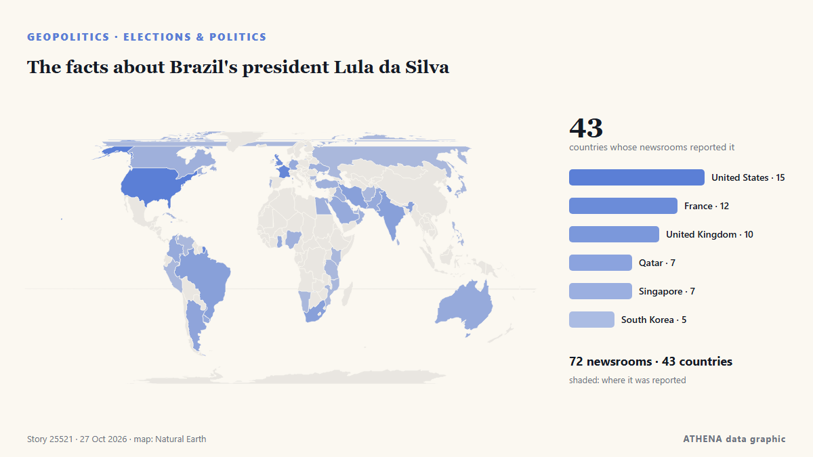

The facts about Brazil's president Lula da Silva

Flávio Bolsonaro, the son of the former president who was jailed over a coup plot, could be on the cusp of winning Brazil’s presidency. από The New York Times (World)
Αναφέρθηκε ανεξάρτητα από 72 μέσα σε 43 χώρες από τις 21 Οκτ, πρώτο το Latin America Reports· η κάλυψη έχει ηρεμήσει. Το ATHENA εκτιμά τον κίνδυνο μέτριο (3.1/10), κυρίως λόγω της σοβαρότητάς του και της εμβέλειάς του. Βεβαιότητα 90% (υψηλή): το επιβεβαιώνουν 72 ανεξάρτητα μέσα, μέση αξιοπιστία 76%. Μέσα ανά χώρα: Ηνωμένες Πολιτείες (6), Ηνωμένο Βασίλειο (4), Κατάρ (3). Κάλυψη: 21 Οκτ έως 26 Οκτ, 99 ώρες.
Γιατί έχει σημασία: Οι εξελίξεις στην ασφάλεια και τη διπλωματία μπορούν να μετατοπίσουν συμμαχίες, εμπόριο και αγορές πολύ πέρα από τις χώρες που εμπλέκονται.
Τι άλλαξε: 12 νέες αναφορές από 12 μέσα στο 24ωρο έως 27 Οκτ.
Πρώτη διατύπωση: Lula wins historic fourth term as Brazilian president in defeat of far-right Flávio Bolsonaro
Οι τίτλοι των ειδήσεων παρουσιάζονται στα αγγλικά, όπως δημοσιεύτηκαν.
Με μια ματιά
Επιλέγεται, βαθμολογείται και γράφεται από τη δημοσιευμένη μεθοδολογία του ATHENA. Κανένας συντάκτης δεν παρεμβαίνει σε μεμονωμένα γεγονότα. Πώς παράγεται ›
| 21 Oct 21:50 UTC | 1 |
|---|---|
| 22 Oct 03:50 UTC | 0 |
| 22 Oct 09:50 UTC | 0 |
| 22 Oct 15:50 UTC | 0 |
| 22 Oct 21:50 UTC | 0 |
| 23 Oct 03:50 UTC | 0 |
| 23 Oct 09:50 UTC | 0 |
| 23 Oct 15:50 UTC | 1 |
| 23 Oct 21:50 UTC | 0 |
| 24 Oct 03:50 UTC | 1 |
| 24 Oct 09:50 UTC | 1 |
| 24 Oct 15:50 UTC | 0 |
| 24 Oct 21:50 UTC | 3 |
| 25 Oct 03:50 UTC | 3 |
| 25 Oct 09:50 UTC | 7 |
| 25 Oct 15:50 UTC | 1 |
| 25 Oct 21:50 UTC | 41 |
| 26 Oct 03:50 UTC | 38 |
| 26 Oct 09:50 UTC | 18 |
| 26 Oct 15:50 UTC | 8 |
| 26 Oct 21:50 UTC | 4 |
| 27 Oct 03:50 UTC | 6 |
| 27 Oct 09:50 UTC | 2 |
| 27 Oct 15:50 UTC | 0 |
| 27 Oct 21:50 UTC | 2 |
| 23 Oct 17:13 UTC | 0.0 |
|---|---|
| 24 Oct 12:53 UTC | 0.8 |
| 26 Oct 03:15 UTC | 2.2 |
| 26 Oct 03:36 UTC | 3.6 |
| 27 Oct 23:23 UTC | 3.1 |
Γιατί αυτοί οι αριθμοί
Σημασία
Κίνδυνος
Βεβαιότητα
Η κάλυψη — ποιος το ανέφερε και πότε
ο τίτλος όπως δημοσιεύτηκε · ανοίγει το πρωτότυπο- Latin America Reports · LATIs the United States interfering in Brazil’s high-stakes presidential election?
- Al Jazeera English · ΚατάρBrazil’s right has already changed the balance of power
- The New York Times (World) · Ηνωμένες ΠολιτείεςThe Other Bolsonaro Who Could Become Brazil’s Next President
- Buenos Aires Herald · ΑργεντινήBrazil’s economic challenges after the Lula–Bolsonaro runoff
- BBC News · Ηνωμένο ΒασίλειοVoters in Brazil head to polls as Lula goes up against Bolsonaro's son
- ABC News Australia · ΑυστραλίαTrump wants to 'restore' US power in Latin America. He could soon be one step closer
- MercoPress · ΟυρουγουάηLula accuses Bolsonaro of “licking Trump’s boots” in the final debate
- KBC · ΚένυαVoters in Brazil to choose between Lula and Bolsonaro’s son
- Al Jazeera English · ΚατάρBrazil 2026 election live: Lula and Bolsonaro in tight race
- The New York Times (World) · Ηνωμένες ΠολιτείεςWhat to Know About Brazil’s Election as Bolsonaro Faces Off With Lula
- Fox News (World) · Ηνωμένες ΠολιτείεςBrazil becomes next test for Latin America’s surging conservative movement
- Colombia One · ΚολομβίαBrazil Chooses Between the Models Offered by Lula da Silva and Flavio Bolsonaro
- Buenos Aires Times · ΑργεντινήMore Lula, or back to the Bolsonaros? Brazil votes in cliffhanger election
- DW English · ΓερμανίαBrazil election: Lula, Bolsonaro cast votes in final bout
- Jamaica Observer · ΤζαμάικαBrazil chooses between Lula and Bolsonaro in nail-biter vote
- PBS NewsHour · Ηνωμένες ΠολιτείεςLula beats Bolsonaro in Brazil runoff, securing fourth presidential term
- Dawn · ΠακιστάνBrazil chooses between Lula and Bolsonaro in nail-biter vote
- The Guardian · Ηνωμένο ΒασίλειοBrazil election 2026: Full second round results as Lula wins comeback against Flávio Bolsonaro
- Sky News (World) · Ηνωμένο ΒασίλειοDefeated Brazilian election candidate refuses to accept result
- MyJoyOnline · ΓκάναLula wins fourth term in Brazil but faces hostile Congress and divided country
- Buenos Aires Herald · ΑργεντινήPresident Luiz Inácio ‘Lula’ da Silva wins surprise reelection in Brazil
- DW English · ΓερμανίαBrazil elections: Lula wins another term, beating Bolsonaro
- Al Jazeera English · ΚατάρLula holds off far right with victory in Brazil presidential election
- The Guardian · Ηνωμένο ΒασίλειοLula wins historic fourth term as Brazilian president in defeat of far-right Flávio Bolsonaro
- DW English · ΓερμανίαBrazilian leftist President Lula wins reelection against conservative challenger Flavio Bolsonaro
- Colombia One · ΚολομβίαLula da Silva Defeats Flavio Bolsonaro and Retains Brazil’s Presidency
- France 24 English · ΓαλλίαBrazil's Lula beats odds and seals re-election, rival Bolsonaro demands annulment
- Fox News (World) · Ηνωμένες ΠολιτείεςConservative wave hits roadblock in Brazil as Lula holds off Bolsonaro challenge
- CNA (Channel NewsAsia) · ΣιγκαπούρηLula, Brazil's iconic working class president, wins fourth term in dramatic comeback
- CBC News · ΚαναδάςLula re-elected in Brazil as Bolsonaro rejects results
- NPR · Ηνωμένες ΠολιτείεςBrazil's left-wing President Lula elected for fourth term
- The Straits Times · ΣιγκαπούρηBrazil election: Lula wins historic fourth term, Bolsonaro refuses to concede
- ABC News Australia · ΑυστραλίαBrazil's Luiz Inácio Lula da Silva re-elected president
- Vanguard · ΝιγηρίαBrazil’s Lula clinches victory over Flavio Bolsonaro to win fourth term
- The Straits Times · ΣιγκαπούρηBrazil election: Five economic challenges facing Brazil’s re-elected President Lula
- Rappler · ΦιλιππίνεςLula, Brazil’s iconic working-class president, wins historic 4th term in dramatic comeback
- Arab News · Σαουδική ΑραβίαLula, Brazil’s iconic working class president, wins historic fourth term in dramatic comeback
- TASS (English) · ΡωσίαIncumbent President of Brazil Lula da Silva wins presidential election
- France 24 English · ΓαλλίαWhat challenges await Brazil's Lula in his fourth term as president?
- Anadolu Agency (English) · ΤουρκίαBrazil's President Lula da Silva wins historic 4th term after defeating Flavio Bolsonaro